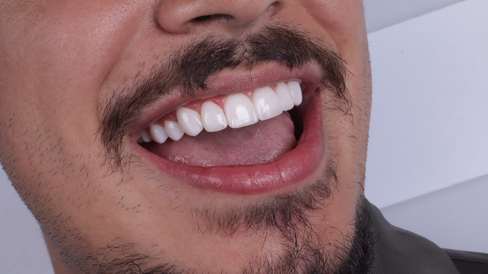

Resina que parece dente de verdade.
Corrija cor, formato e espaços do seu sorriso com técnica, precisão e acabamento natural.

Resultados reais.
Cada sorriso é planejado individualmente. Veja o que a resina bem executada é capaz de fazer.
Resultados variam conforme cada caso. Imagens publicadas com autorização dos pacientes.
Quero um resultado assimUm sorriso novo, preservando o seu dente.
A resina composta é um tratamento conservador. Em vez de desgastar a estrutura do dente, ela é aplicada e esculpida camada por camada, corrigindo cor, formato, fraturas e espaços com naturalidade. Na maioria dos casos o tratamento é concluído em poucas sessões, e pode ser ajustado ou reparado no futuro.

Resina bem feita
não se nota.
-
Harmonia
Cor e formato em harmonia com o seu sorriso
A escolha da cor e a modelagem do material são pensadas de forma individual, para que o resultado se integre naturalmente ao seu rosto e ao seu sorriso.
-
Polimento
Acabamento e polimento cuidadosos
O polimento final define o brilho e a textura da superfície. É um passo técnico que faz toda a diferença na aparência natural do resultado.
-
Cuidado
Orientação de cuidados depois do tratamento
Após o procedimento, você recebe orientações claras sobre como cuidar do resultado. Um bom acabamento começa na cadeira e continua na rotina.
"O melhor resultado é aquele que ninguém percebe."
Quem cuida do seu sorriso.
Cirurgião-dentista com foco em restaurações estéticas em resina. Cada caso começa por uma avaliação cuidadosa, seguida de planejamento individual e atenção a cada detalhe do sorriso, da cor ao acabamento final.
- Avaliação individual
- Planejamento do sorriso
- Acabamento cuidadoso
Do primeiro contato ao novo sorriso.
Você nos chama e conta o que gostaria de mudar. É simples e sem compromisso.
Analisamos o seu caso com atenção. Cada sorriso é único e merece uma avaliação individual.
Definimos o melhor caminho para o seu caso e apresentamos o planejamento completo.
Realizamos o procedimento com atenção a cada detalhe, do primeiro ao último passo.
Perguntas frequentes.
A resina pode sofrer alterações de pigmentação ao longo do tempo em contato com alimentos e bebidas com corantes. Por isso, a rotina de higiene e as sessões periódicas de manutenção e polimento são essenciais para conservar o brilho e a tonalidade originais.
A longevidade depende dos hábitos de mastigação, da higiene bucal e do acompanhamento preventivo. Em cada consulta de avaliação, explicamos detalhadamente o prognóstico e como preservar o resultado por muito mais tempo.
Na grande maioria das indicações, trata-se de um procedimento altamente conservador, suave e confortável para o paciente, realizado com precisão e sem desconforto.
Sim. Cada sorriso possui características anatômicas, oclusais e estéticas únicas. A avaliação clínica prévia é fundamental para indicar o plano de tratamento correto para o seu caso.
Pronto para mudar o seu sorriso?
Fale diretamente com nossa equipe e agende sua avaliação personalizada.
Onde estamos
- Segunda a sexta09:00 – 18:00
- Sábado09:00 – 18:00
- DomingoFechado